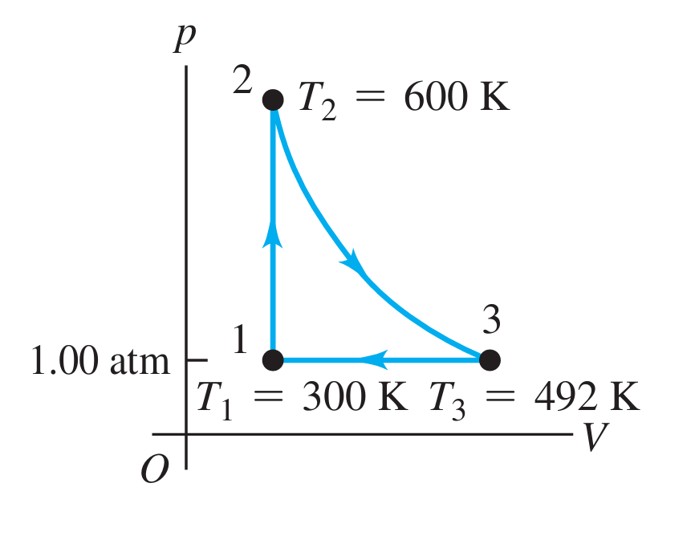

6.7. Questions#
Note: Some questions present have been used from the Concepts of Thermal Physics or University Physics with Modern Physics textbooks. Whenever this is the case, we will specify beside the question via:
Concepts of Thermal Physics \(\rightarrow\) TP ChapterNumber.QuestionNumber
University Physics with Modern Physics \(\rightarrow\) UPMP ChapterNumber.QuestionNumber
A heat engine works on the Carnot Cycle, taking heat from burning fuel at 600 K at the rate of 1000 W. The heat engine rejects the waste heat at a temperature of 300 K. What is the efficiency of the engine and the power output.
The coefficient of performance (COP) of a heat pump is equal to 4. If the heat pump absorb 100 J of energy per cycle from a cold reservoir, how much work is required per cycle, and how much heat is expelled to the hot reservoir per cycle?
(UPMP 20.9): The Otto-cycle engine in a Porsche 911 Carrera has a compression ratio of 10.2.
(a) What is the ideal efficiency of the engine? Use \(\gamma=1.40\).
(b) The engine in a Ferrari F430 has a slightly higher compression ratio of 11.3. How much increase in the ideal efficiency results from this increase in the compression ratio?
Describe, with the aid of diagrams, the operation of an engine operating on the Rankine cycle.
Consider the Otto cycle.
(a) Explain each stage of the Otto cycle, making use of a pV diagram in your answer. Make it clear in which stage heat is added, heat is subtracted, work is done by, and work is done on the engine.
(b) What is the compression ratio of the engine?
(c) Why do diesel engines not require spark plugs?
(UPMP 20.34): A heat engine takes 0.350 mol of a diatomic ideal gas around the cycle shown in the \(pV\)-diagram of Fig. 6.9. Process \(1\rightarrow 2\) is at constant volume, process \(2\rightarrow 3\) is adiabatic, and process \(3\rightarrow 1\) is at a constant pressure of 1.00 atm. The value of \(\gamma\) for this gas is 1.40.
(a) Find the pressure and volume at points 1,2 and 3.
(b) Calculate \(Q,W\) and \(\Delta U\) for each of the three processes.
(c) Find the net work done by the gas in the cycle.
(d)Find the net heat flow into the engine in cycle.
(e) What is the thermal efficiency of the engine? How does this compare to the efficiency of a Carnot-cycle engine operating between the same minimum and maximum temperatures \(T_{1}\) and \(T_{2}\)?
{kind=link}

Fig. 6.8 Image taken from University Physics with Modern Physics textbook.#
Explain with the aid of diagrams the operation of the Carnot cycle, detailing each stage in the process.